+100
Active FarmTree Tool users
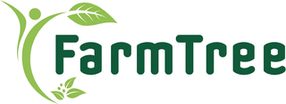
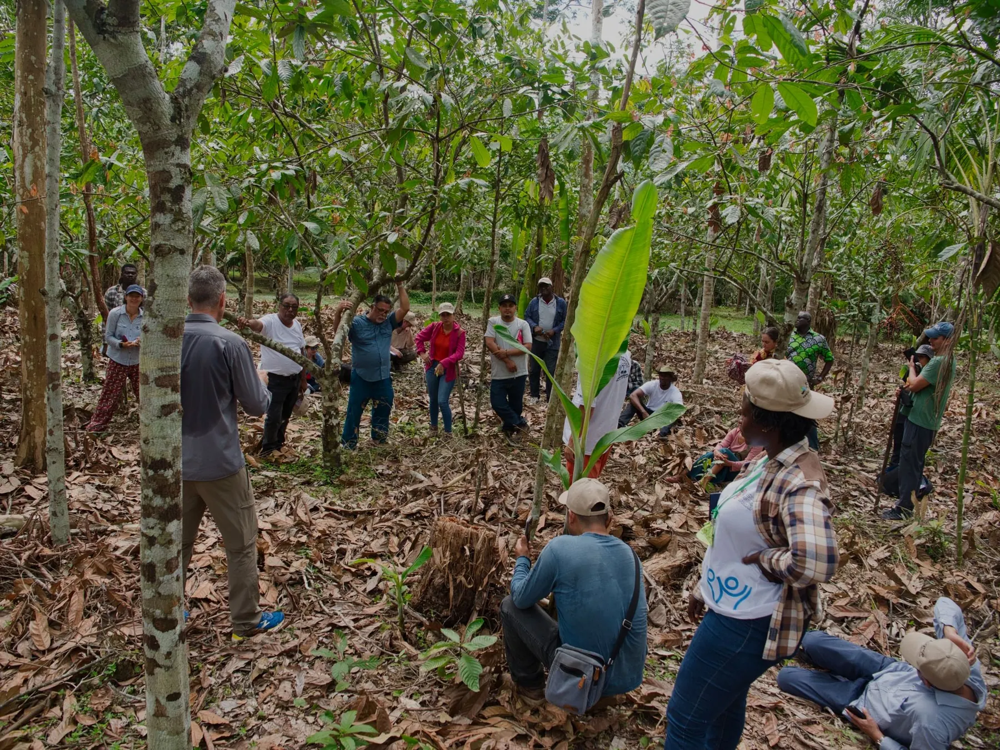
FarmTree helps organisations turn agroforestry complexity into clearer project intelligence for planning, reporting and investment decisions.
Explore how FarmTree turns agroforestry scenarios into measurable outcomes and investment-ready plans.
Active FarmTree Tool users
Projects
Agricultural regions impacted
Farmers indirectly reached
Project staff can learn, in a short time, to make agroforestry investment plans and show farmers different options: costs, benefits, and projected returns.
See the platformFarmTree's base technology connects site information, climate, soil and species data into a science-based methodology for projections and reporting.
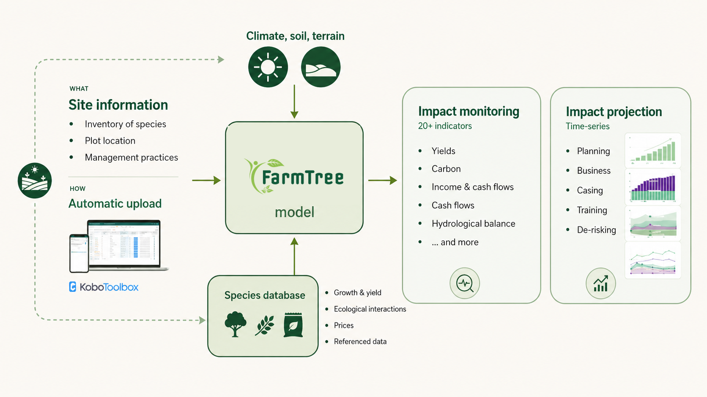
Identify the baseline, what is on the plot, and the intervention that is planned.
FarmTree Model links climate, soil and species data and runs the scenario.
The model produces indicators across production, carbon, hydrology, soil fertility, labour and economics.
Time-based projection of future risks, performance and benefits.
Organisations that have worked with FarmTree across Africa, Asia and Latin America on planning, carbon finance, cocoa landscape and water resilience projects.
Each audience gets a direct path to the value FarmTree can create for their planning, investment or reporting work.
De-risk your agroforestry portfolio with credible projections and long-term farmer return scenarios.
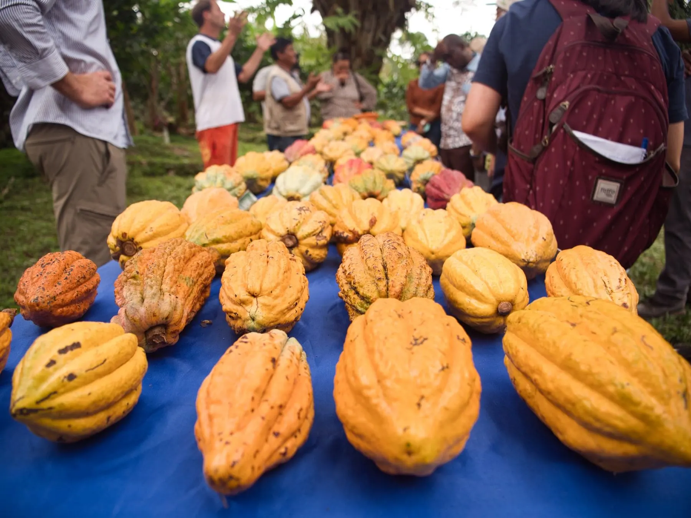
Design, implement and scale agroforestry projects with clearer investment plans and reporting logic.
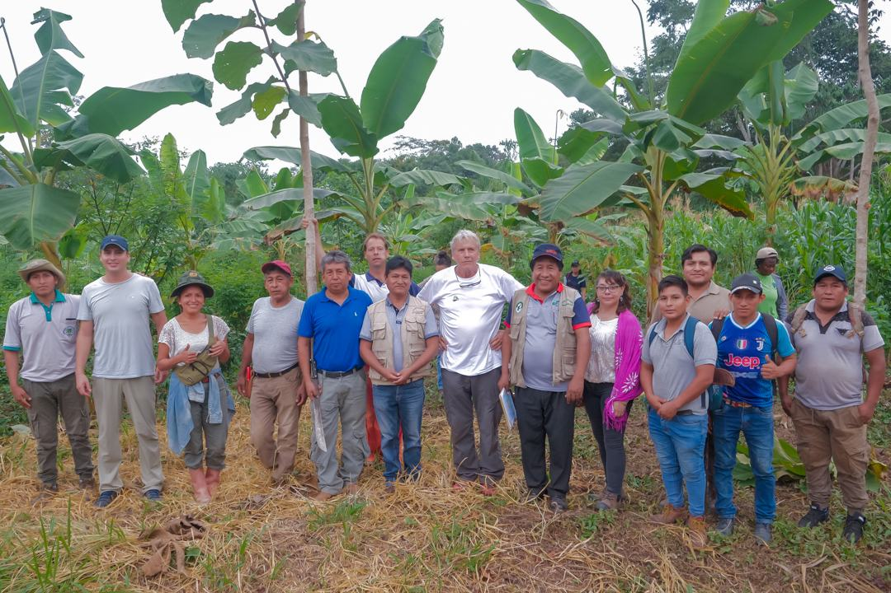
Access calibrated, science-backed modelling tools for local species, soils, climate and project context.
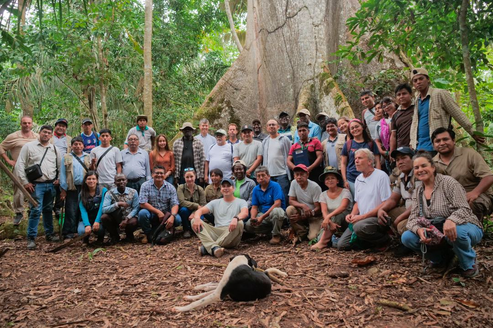
Understand the value of land under different agroforestry scenarios and compare costs, benefits and risks.
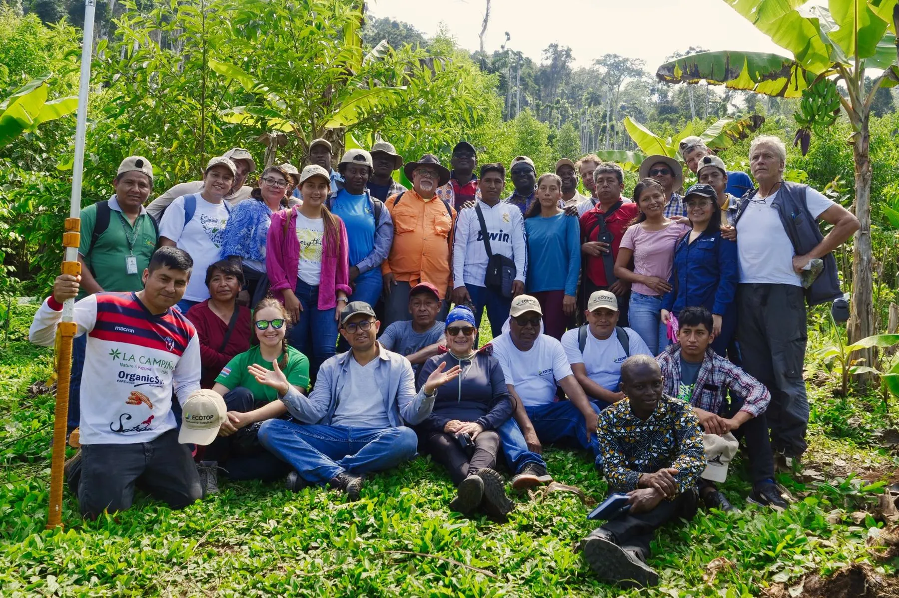
Connect monitoring data with credible impact projections for carbon, water, productivity and farmer value.
Fresh resources for returning visitors, project teams and climate finance partners.
How credible projections help teams compare impact, farmer value and long-term risk before implementation.
A short overview of how local data, species assumptions and project context move into FarmTree scenarios.
Selected proof stories from partners using FarmTree for carbon, finance, cocoa and water resilience work.
Real project experience across programme planning, carbon finance, cocoa landscapes and water resilience — each theme links to the full Track Record.
Combining carbon projections with farmer income analysis to build a programme-level investment case for the LOSO Nyando landscape in western Kenya.
Translating ACORN field data into credible carbon plans and long-term farmer value scenarios across smallholder agroforestry programmes in multiple countries.
Beyond Beans + Cacao de Bosque: comparing shade-tree systems, carbon potential and farmer economics to shape landscape-level cocoa investment decisions.
Connecting water balance modelling, erosion risk and ecosystem service projections to support landscape investment decisions with measurable water resilience outcomes.
Organisations that have worked with FarmTree across Africa, Asia and Latin America on planning, investment and reporting.
“The FarmTree Tool and team helped us understand the value of different agroforestry systems and the potential for increased revenue over a few decades.”
“FarmTree is the first and only service that makes science-based agroforestry projections at scale: water, carbon, biomass, even cost and revenue, they do everything!”
“FarmTree provides a remarkable level of detail that helps us truly understand why coffee agroforestry systems perform the way they do.”
“We know very little of agroforestry options for a particular local context. The FarmTree tool is super helpful to generate location-specific scenarios!”
“We found the FarmTree Tool essential for predicting outcomes of highly complex farm scenarios, among many, also agroforestry systems.”
Selected perspectives from partners across the agroforestry investment and implementation chain.
"FarmTree is the first and only service that makes science-based agroforestry projections at scale: water, carbon, biomass, even cost and revenue. They do everything."
Mathijs de Bruin — TreeScape
"FarmTree provides a remarkable level of detail that helps us truly understand why coffee agroforestry systems perform the way they do — and how to communicate that to partners."
Katharina Lima de Miranda — HRNS
"We know very little of agroforestry options for a particular local context. The FarmTree tool is super helpful to generate location-specific scenarios quickly and confidently."
Rob Kelly — World Vision Australia
Common questions about FarmTree, the platform, and how to get started. Can’t find what you need? Contact us directly.
Request a demo or ask for a quotation. FarmTree will work with you to understand your scope, project context and reporting needs.
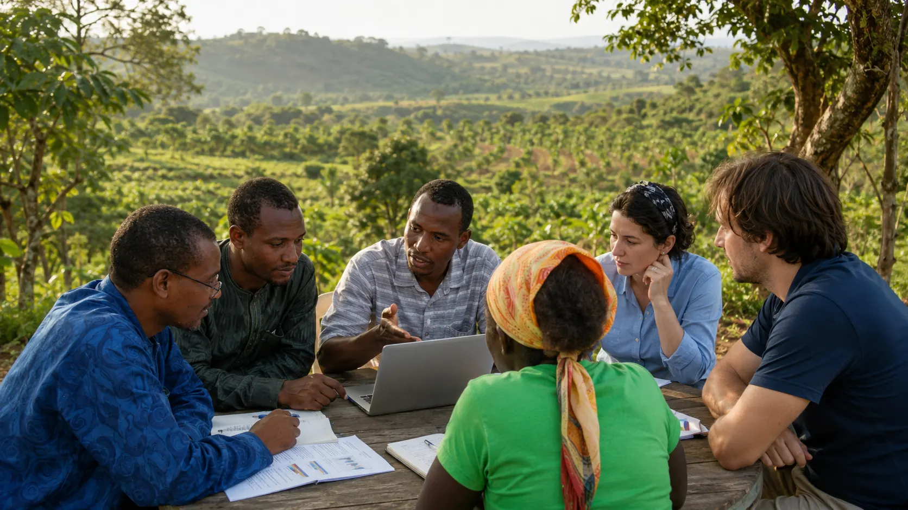
Design agroforestry scenarios and project carbon, financial and environmental indicators for up to 50 years.
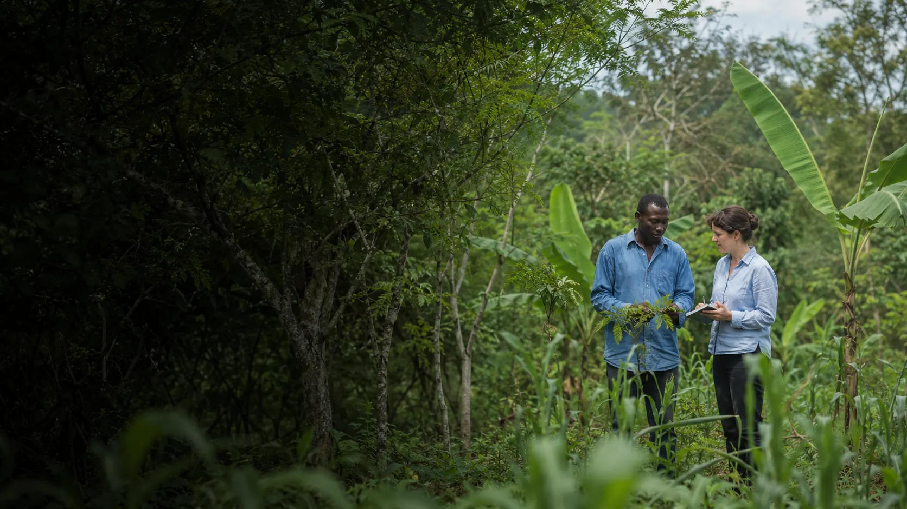
The FarmTree model is composed of interconnected sub models simulating soil, nutrients, water, plant growth, production, carbon, labour and finance.
Biomass accumulation, carbon stock, Carbon Removal Units and carbon revenue by species.
Yields, production costs, revenues, cash flows, profitability and labour needs.
Water balance, soil organic matter, nutrient flows, erosion and biodiversity.
Compare multiple project areas and portfolio wide performance.

Three service areas that match where you are in your agroforestry journey — from initial scenario design to multi-country independent operation.
FarmTree's service model follows a clear four-step logic — each step builds on the previous one and can be the starting point depending on your team's current capability.
Map your project context, clarify objectives, and identify the right FarmTree engagement level for your team.
Build agroforestry scenarios using local species data, climate parameters and your project assumptions.
FarmTree delivers science-backed outputs alongside your team and trains local staff to understand and operate the platform.
Extend the same methodology across more sites and seasons — with consistent reporting and comparable impact metrics.
Each service area matches a phase in the agroforestry project lifecycle. Many organisations start with one and expand as confidence grows.
Expert-led scenario design that translates project context, species assumptions and local data into credible farm plans and investment cases. What normally takes consultants months, FarmTree generates in hours — with full documentation and scientific rigour.
FarmTree calibrates the platform for your local context and trains your team to collect field data, operate the model and interpret outputs — reducing dependence on external experts over time and building in-house analytical capacity.
Once your team is operating independently, FarmTree supports multi-site management, portfolio comparison and investor-ready reporting — keeping methods consistent as your programme expands across regions and countries.
Regardless of which service area you engage, every projection, scenario and report is grounded in FarmTree's peer-reviewed interconnected model — covering four domains simultaneously.
Whether you are designing a first scenario or scaling an established programme, FarmTree has a service level that fits your current needs and your next step.
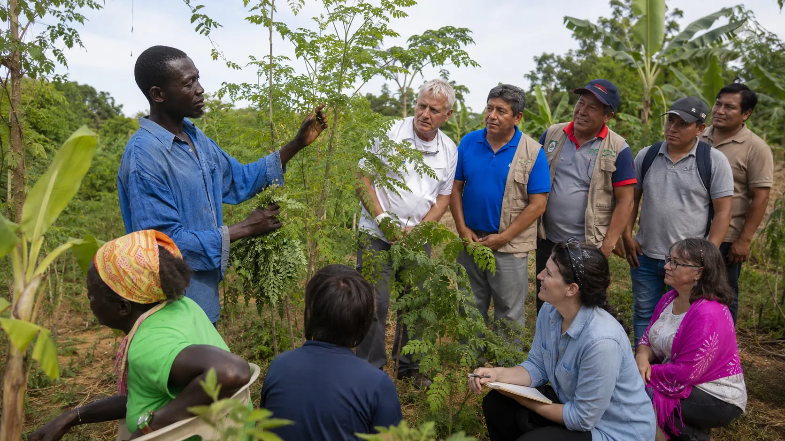
From investment case design to multi-country portfolio management — projects across Africa, Asia and Latin America that demonstrate FarmTree's science-based approach in practice.
A representative selection of programmes, investment cases and platform engagements supported by FarmTree. Four projects link directly to detailed case study pages.
Landscape-scale agroforestry scenario design for a GIZ climate programme — turning local species data and project context into a structured investment framework.
A shared carbon modelling framework for Rabobank's ACORN smallholder programme — consistent methodology applied across projects on three continents.
Shade-tree density and carbon insetting scenario planning for the Beyond Beans cocoa supply chain programme — comparing systems at landscape scale.
Integrated water balance, carbon and farmer value modelling for the LOSO Nyando landscape programme in western Kenya's Lake Victoria watershed.
Watershed reforestation and restoration planning — scenario modelling for species selection, water balance and long-term land restoration value.
Entrepreneurial agroforestry strategy and landscape planning — species scenario design for a national agroforestry development programme.
Scenario modelling for integrated pest management and agroforestry diversification within oil palm systems — species mix and income projections.
Supporting international research programmes with agroforestry scenario modelling, carbon projections and comparative landscape analysis.
FarmTree's methods are calibrated for diverse climatic zones, species contexts and land-use systems — from the humid tropics to dry savannas and highland landscapes.
FarmTree's three-phase approach moves teams from initial scenario design through to independent platform operation and scaled agroforestry reporting.
Talk to the FarmTree team about relevant project experience, available case narratives and how our methods apply to your geography and crop system.
Four real programmes where FarmTree's science-based modelling helped teams plan, invest and report on agroforestry at scale.
FarmTree supported GIZ programme planning in Madagascar — translating project context and species assumptions into credible investment scenarios for stakeholder alignment.
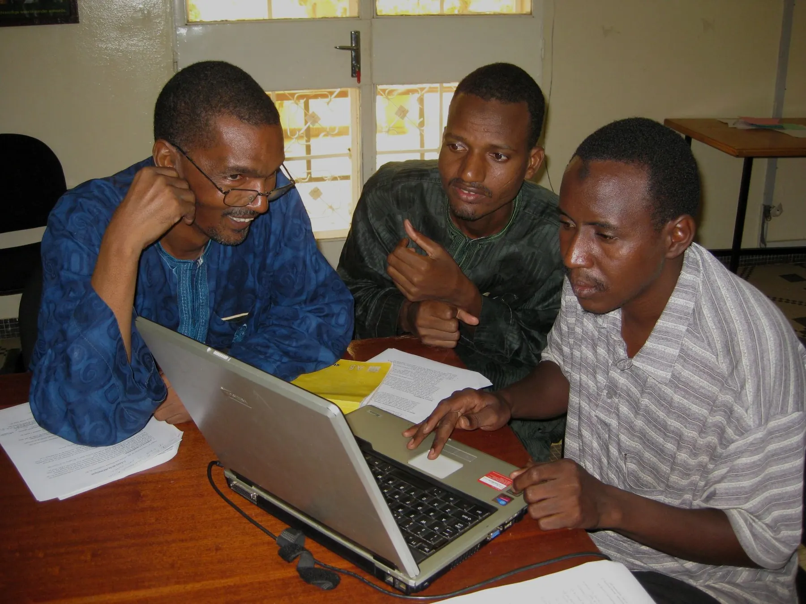
ImplementationFarmTree translated Rabobank ACORN field data into carbon projections and farmer value scenarios across smallholder programmes in Africa, Asia and Latin America.
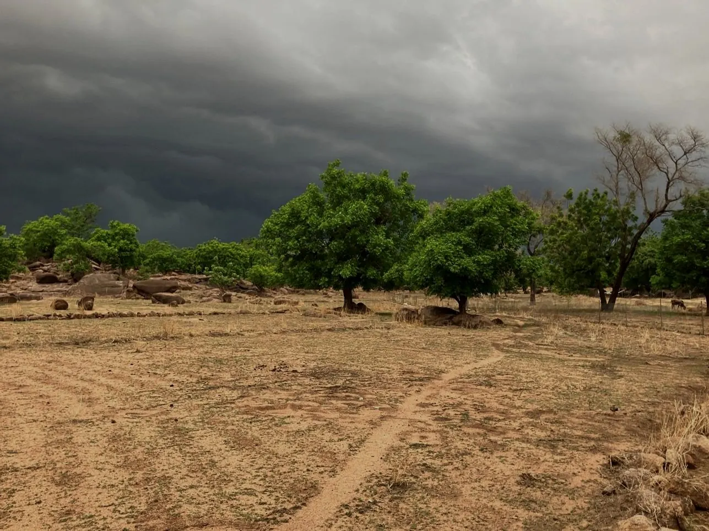
ScalingFarmTree modelled shade-tree density, species mix and long-term carbon insetting for Beyond Beans — turning cocoa landscape complexity into clear, comparable scenarios.
FarmTree modelled water resilience, carbon stocks and farmer value outcomes for the LOSO Nyando landscape programme in western Kenya, supporting long-term investment planning.
Request a demo, or start a conversation with the FarmTree team.

Compare shade systems and understand their effect on production and resilience.
Model tree combinations, cocoa systems and local conditions.
Understand how scenarios affect yields, costs and cash flow.
Estimate long term carbon value within cocoa supply chains.
Get a sneak peek of the FarmTree Platform features and functions. This page collects the platform tutorial topics from the current FarmTree user videos page in the new visual system.
Get a sneak peek of the FarmTree Platform features and functions.
Learn how to manage your team on the FarmTree Platform, from inviting new members to tracking roles and removing inactive users.
Explore the Multiplot Tool on FarmTree, run and analyse hundreds of scenarios at once, select metrics, and export results with ease. Built for scale and speed.
Get started with the FarmTree Tool, build agroforestry scenarios, define plots, add species, and run detailed simulations with just a few clicks. Flexible, data-rich, and intuitive.
Use the FarmTree Comparison Tool to evaluate multiple agroforestry scenarios side by side, compare carbon, yields, water balance, revenues, and more to find the best fit.
Organise, search, and manage all your agroforestry scenarios with ease on the FarmTree Platform. Create folders, tag scenarios, and collaborate smoothly.
Learn how to upload, create, and manage plot polygons on the FarmTree Platform, organise locations, extract data, and use them in your scenarios.
Understand uncertainty margins for the carbon sequestration potential of different tree species.
Optimize soil fertility parameters in the tool for effective soil health management in agroforestry.
How to create a FarmTree Tool Demo account.
Key tool features and functionalities to design a scenario.
How to plan agroforestry interventions for future-proof watershed management.
Conoce nuestras herramientas digitales para la gestión y evaluación de proyectos de agroforestería.
How to examine the production potential of plant species based on growth limiting factors.
Understanding projections on biomass production and how they relate to carbon sequestration.
How to link your scenario to site-specific climate data and explore the impact of climate change.
Understanding the effect of land use on biodiversity.
How to define key settings, prices, costs and labour, and review their impact on the financial projections.
How to adjust species planting densities in intercropping scenarios and review their effect on cover.
How to explore the effect of tree planting on water inflows and outflows from the soil layers.
How to simulate irrigation application and review its effect on the water requirements of species.
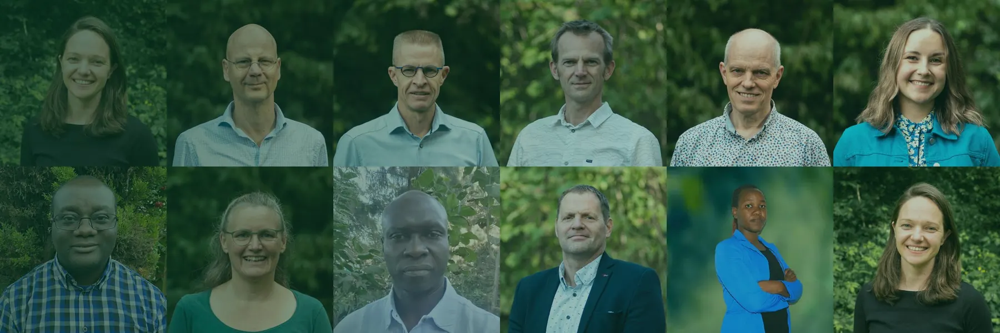
A multidisciplinary team combining agroforestry science, modelling, software, field knowledge and project experience.
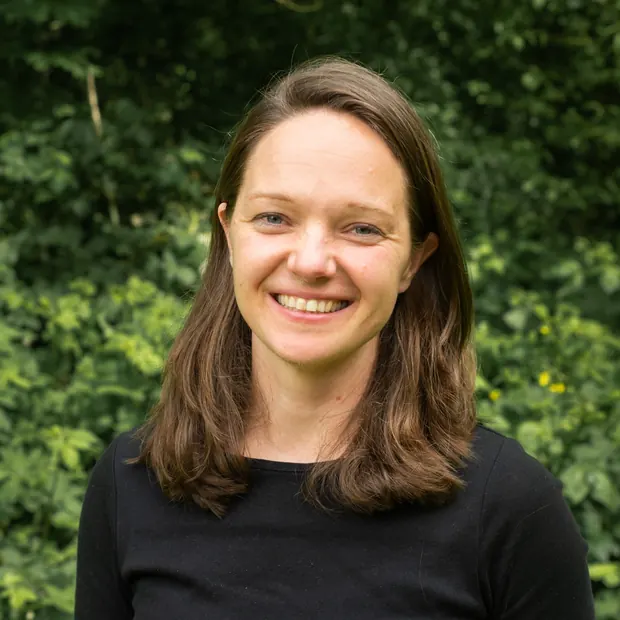
FarmTree Team
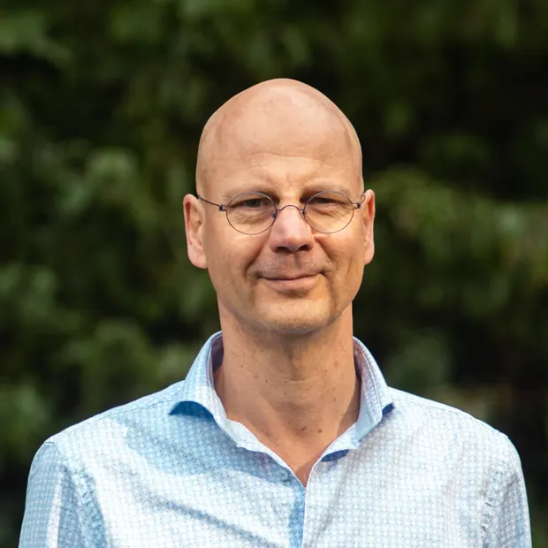
Agroforestry & Modelling
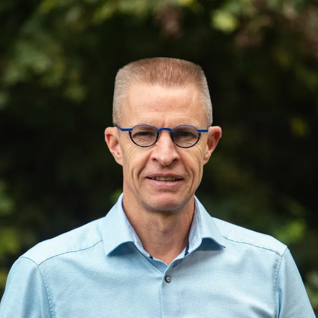
Agroforestry Specialist
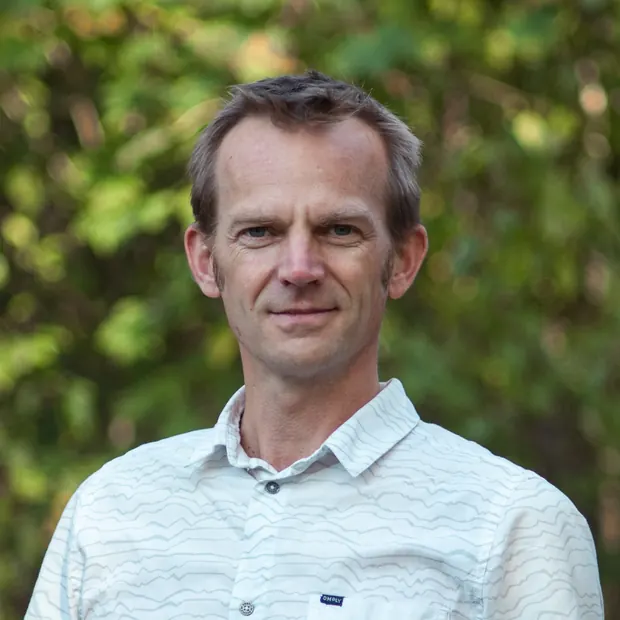
Agroforestry Specialist
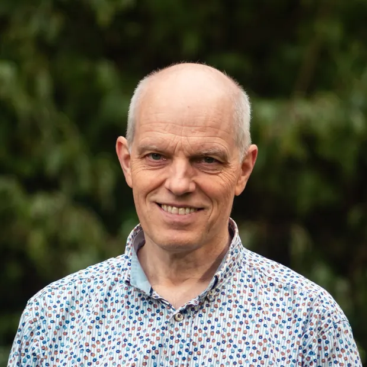
Co-founder / Partnerships
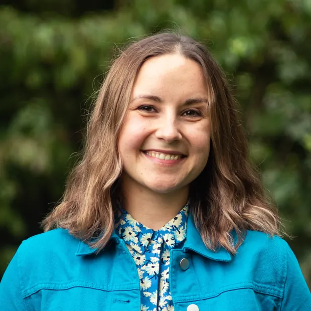
FarmTree Team
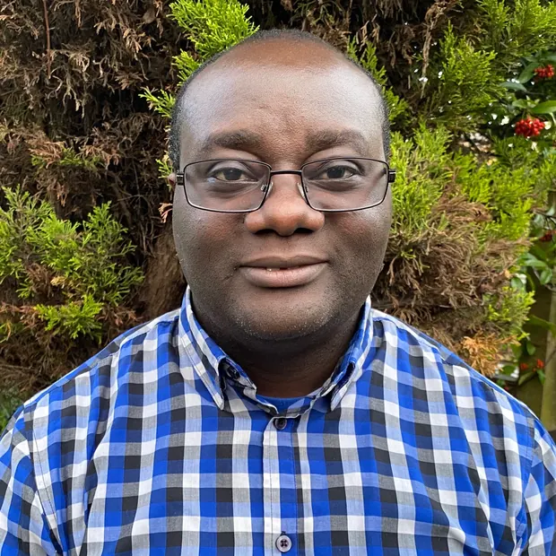
FarmTree Team
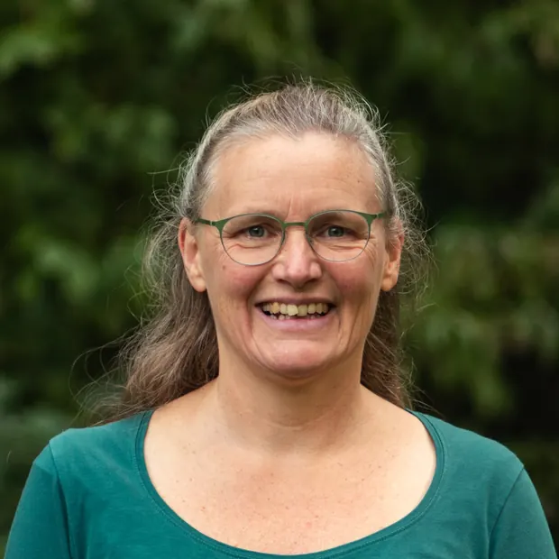
FarmTree Team
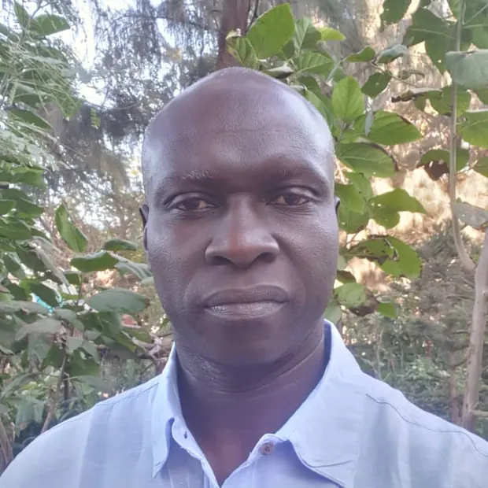
FarmTree Team
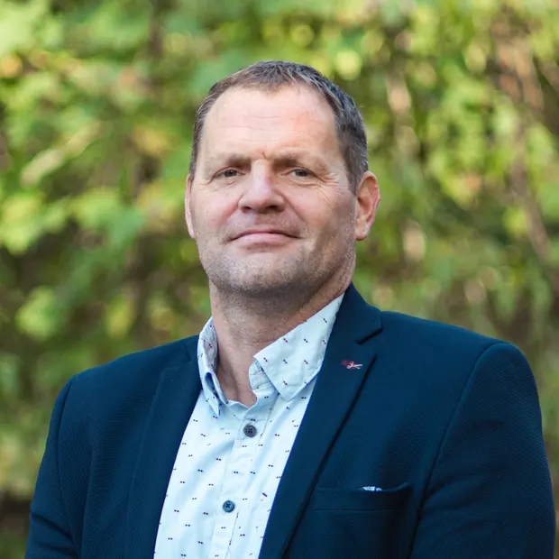
FarmTree Team
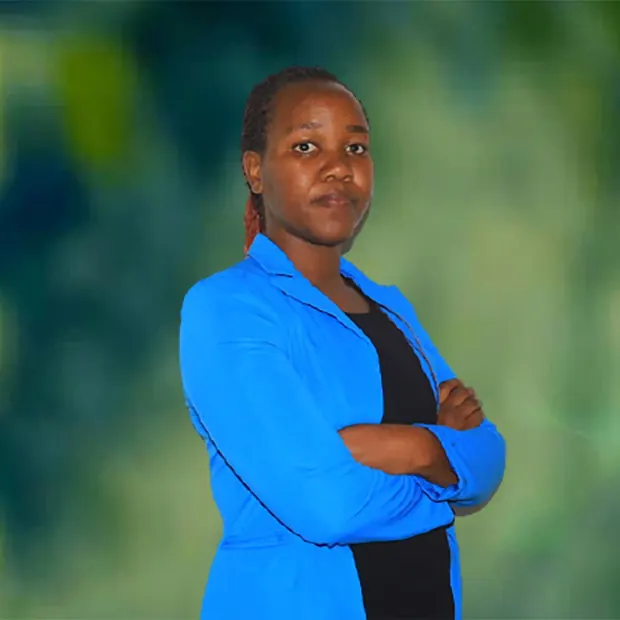
FarmTree Team

Assist in keeping FarmTree financial systems up to date.
Contribute to modelling capabilities for agroforestry and erosion.
Work with species data and agroforestry restoration databases.
Learn, develop and join an international dynamic team.

Plus Ultra Building, Bronland 12C-1, 6708 WH Wageningen, The Netherlands. Call +31 (0)630 884 640 or email info@farmtree.earth.
Contact us about anything related to our company or services. We will do our best to get back to you as soon as possible.
Fill in the fields below and the FarmTree team will follow up within one business day.
The FarmTree team will review your request and be in touch within one business day.

This page can include contributors, research partners, funders and project acknowledgements connected to FarmTree methodology and platform development.
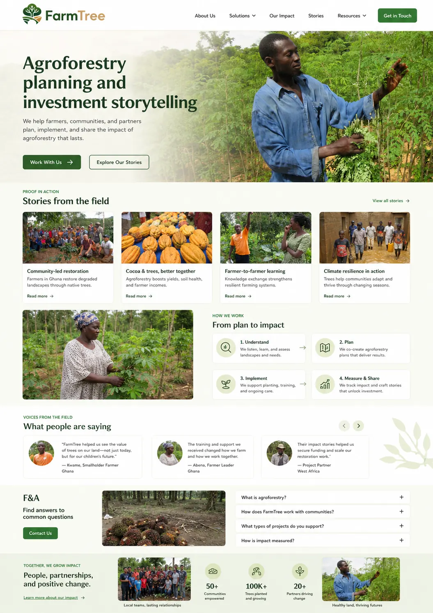
This page can explain platform access, model use, data responsibilities, privacy, permissions and licensing arrangements for FarmTree Platform users.
FarmTree helps development finance institutions translate complex agroforestry programmes into structured, evidence-based scenarios aligned with M&E frameworks, donor requirements and climate fund standards.
DFIs and donors need to coordinate complex programmes across diverse geographies, implementation partners and reporting systems — without losing scientific credibility or operational consistency.
Large-scale programmes often involve multiple implementing partners and reporting systems. Without a shared methodology, programme-level comparison and transparent accountability become difficult to maintain.
Climate and livelihood outcomes are expected, but the science behind projected impact is rarely transparent or independently reviewable — creating friction in funder relationships and complicating mid-term reviews.
Moving from pilot to multi-country roll-out requires consistent planning logic, calibrated local assumptions and a common reporting language — one that field teams can actually operate without expert support.
Build comparable scenarios across sites, countries and implementation partners using a shared methodology — ensuring programme coherence even with diverse field conditions and local contexts.
Model carbon, water, biodiversity and farmer income indicators together — producing the multi-dimensional impact evidence that climate funds and institutional donors increasingly require.
FarmTree outputs are structured to support monitoring and evaluation frameworks — connecting planning assumptions to measurable indicators that field teams can track and report against over time.
Produce scenario documentation and impact narratives that align with Green Climate Fund, CSRD and common donor reporting standards — reducing the burden on programme teams at reporting time.
Structure the science behind a new climate or livelihood programme before committing to implementation partners or seeking institutional approval — using credible, reviewable projections that hold up to scrutiny.
Apply a consistent planning and monitoring logic across a portfolio of agroforestry investments — enabling performance comparison between sites and countries without requiring additional analytical capacity at programme level.
Generate science-backed impact narratives and indicator summaries that meet the reporting standards of institutional funders — from mid-term reviews to final programme evaluations — without rebuilding the evidence base from scratch.
FarmTree supported GIZ in designing credible agroforestry scenarios for a programme-level investment case in Madagascar — translating local context into a structured planning framework for funders and implementers.
Read the case study ↗Request a programme demo with the FarmTree team. We will walk you through a relevant scenario and discuss how FarmTree can support your planning, M&E and donor reporting needs.
FarmTree can help implementing partners move from fragmented manual reporting to more consistent project assumptions, field learning and stakeholder communication.
Map an implementation workflow and identify where FarmTree can support daily project work.
FarmTree does not publish fixed price lists. Every engagement starts with your context, your team and your goals — then we propose the right scope and level of support.
Agroforestry projects vary enormously in complexity, geography, team capability and reporting requirements. A one-size price list would either overprice simple engagements or underdeliver on complex ones.
Each tier represents a different level of depth, team involvement and time commitment. All tiers use the same science-based FarmTree methodology.
For defined modelling questions and investment case reviews. FarmTree delivers science-backed scenario outputs with full documentation — without team onboarding or platform access.
For teams ready to engage with the FarmTree platform directly. Includes demo, onboarding, guided use-case sessions and local calibration support.
For teams building independent, repeatable agroforestry planning capacity. Includes structured training, multi-site management and ongoing reporting support.
These are the main factors that determine the right engagement level and inform the quotation FarmTree prepares for your project.
Multi-country or multi-site projects require separate calibration steps and may involve different species databases and climate parameters.
Locally calibrated species models take more time to set up than standard configurations. New species not yet in the CAFS database require additional scientific input.
The number of staff to train, their prior experience with quantitative tools, and the language of delivery all affect training scope and time.
Outputs aligned with specific standards — Verra VCS, Gold Standard, GCF, CSRD — require additional documentation and review steps beyond standard deliverables.
Ongoing monitoring engagements require baseline documentation, field data structure design and periodic model updates that extend the engagement scope.
Some teams need one-time scenario delivery; others benefit from quarterly updates, model recalibration and regular communication with the FarmTree team.
The most common questions we receive before a quotation is requested.
Send FarmTree a brief description of your project and goals. The team will review your context and come back with a clear scope proposal within a few business days.
GIZ needed landscape-scale agroforestry scenarios for Madagascar that funders, implementers and local teams could evaluate together — fast.
GIZ needed to translate a complex agroforestry programme idea in Madagascar into structured investment scenarios that funders, implementers and local teams could evaluate together. FarmTree provided the modelling capacity to do this quickly, consistently and with enough scientific rigour to support institutional decision-making.
A large-scale programme with multiple species candidates, sites and land-use histories. GIZ needed a planning framework that could work across different local conditions while remaining comparable at programme level.
Building credible agroforestry scenarios requires integrating local species data, climate assumptions, land quality parameters and financial projections — work that typically takes external consultants months to complete and rarely produces comparable outputs.
FarmTree ran landscape-level scenario design sessions with the project team, calibrated species assumptions with local data and generated carbon, production and farmer income projections in hours — producing outputs the programme team could review, adjust and present to funders.
A set of comparable agroforestry scenarios covering different species mixes, planting densities and land-use configurations — structured for funder review and programme design decisions.
Science-based projections for carbon sequestration, biomass accumulation and farmer income under each scenario — aligned with GIZ programme reporting expectations and climate finance standards.
A structured planning framework that project teams and climate finance partners could use to evaluate trade-offs and support programme design and funding conversations.
Rabobank ACORN needed a shared scientific methodology to compare smallholder agroforestry projects across three continents — consistently and at portfolio scale.
The Rabobank ACORN programme connects smallholder farmers across Africa, Asia and Latin America to voluntary carbon markets. To manage a portfolio of this scale, ACORN needed a consistent, science-based method to translate diverse field conditions into comparable carbon and farmer value projections. FarmTree provided that foundation.
Smallholder agroforestry projects across multiple countries and climatic zones, each with different species, soils, land-use histories and reporting requirements — all needing to be managed within a single programme framework.
Maintaining scientific consistency when field conditions, species databases and local assumptions vary significantly across geographies — while still producing carbon projections that meet voluntary carbon market standards and support investor confidence.
FarmTree calibrated local species and condition parameters for each project geography, built a shared scenario logic that could be applied across the portfolio, and generated carbon stock and farmer income projections aligned with Verra VCS methodology.
A shared scenario logic applied across all ACORN project geographies — enabling portfolio-level comparison and reporting on a single scientific basis without sacrificing local accuracy.
Local species data, climate parameters and land-use assumptions calibrated per geography — maintaining scientific accuracy without requiring separate methodologies per site or country.
Long-term income and cash flow projections that helped local teams communicate the economic value of agroforestry participation to farmer communities, carbon buyers and programme partners.
Beyond Beans needed evidence-based comparisons of shade-tree systems across their cocoa supply chain — to make investment decisions that worked for farmers, buyers and the climate.
Beyond Beans works with cocoa supply chains to improve sustainability and farmer livelihoods across landscapes. FarmTree helped Beyond Beans compare the effect of different shade-tree systems — modelling the trade-offs between productivity, farmer income and carbon insetting potential across their sourcing geographies.
Cocoa landscapes with varying shade-tree densities, species mixes and climate conditions — each combination affecting productivity, carbon potential and farmer income differently, making system comparison difficult without a shared modelling framework.
Supply chain sustainability decisions need to be grounded in evidence. Beyond Beans needed to show how different shade configurations affect long-term farmer returns and carbon outcomes in a format that supply chain partners and climate investors could review with confidence.
FarmTree built scenario comparisons across shade-tree density ranges and species combinations, projecting farmer cash flow, carbon insetting potential and productivity under each configuration at both farm and landscape scale.
Side-by-side projections for different shade-tree densities and species mixes — showing the effect on cocoa productivity, farmer income and long-term carbon potential across the supply chain geography.
Quantified carbon insetting estimates per land configuration, enabling supply chain partners to evaluate the carbon value embedded within the cocoa system — rather than relying on external offsetting mechanisms.
Landscape-level outputs structured for communication with supply chain partners, co-investors and sustainability programme funders — combining farmer economics, environmental outcomes and carbon value in one narrative.
The LOSO Nyando programme needed to translate multi-dimensional landscape impact into a coherent, investor-ready narrative — across water, carbon and community livelihoods.
The LOSO Nyando programme brings together community land restoration, water resilience and agroforestry investment in the Lake Victoria watershed, western Kenya. FarmTree helped the programme team build an investment-grade narrative connecting hydrological services, carbon outcomes and farmer income — giving funders and partners a clear, unified picture of landscape value.
A complex multi-stakeholder landscape programme with ambitions across water resilience, carbon markets and community livelihoods. Each impact dimension needed to be modelled independently — but also presented as part of a coherent, credible investment story for funders and water authority partners.
Connecting hydrology, carbon and farmer value into a single, technically rigorous model demands both scientific depth and narrative clarity. The programme needed outputs that could be validated by science partners, communicated to investors and eventually linked to field monitoring systems.
FarmTree modelled water balance and erosion risk under different land restoration scenarios, projected carbon stocks and farmer income alongside hydrological indicators, and produced landscape-level aggregations that supported programme reporting and investor communication in parallel.
Modelled water balance and erosion risk under different agroforestry interventions — quantifying the hydrological service value of landscape restoration for programme funders and water authority partners.
A single analytical framework connecting water, carbon and farmer income across the Nyando landscape — enabling programme teams to present a coherent, complete and science-backed investment narrative.
Scenario baselines and projection bands that can be connected to field monitoring data over time — supporting ongoing performance review, adaptive programme management and reporting to climate finance partners.
AI assistant for platform, agroforestry and demo questions